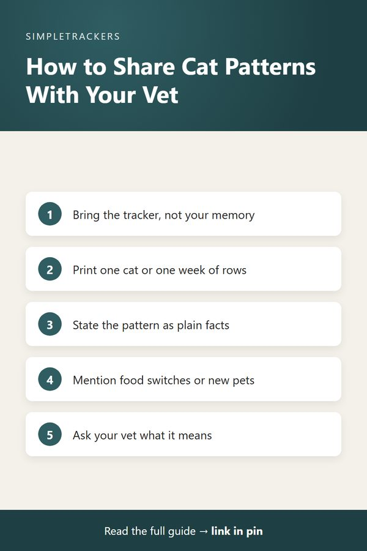

From Observations to Decisions: Using Your Tracker With Your Veterinarian
← Back to the Complete Multi-Cat Household Guide

Key takeaways
- Patterns, not blips: look for changes that persist, repeat, happen together or clearly depart from a cat's baseline.
- Review on a schedule: every week or two, read back what you wrote without interpreting it.
- Bring the data: show your vet the actual tracker or a printout, state the pattern as facts and add context.
- Let your vet interpret: your expertise is documenting; theirs is explaining what it means.
- Don't wait for a problem: sharing baselines at wellness visits pays off later.
Your Observations Are Valuable Data for Your Vet
After a few weeks of tracking, you'll start to notice patterns:
- One cat's litter box visits dropped from five per day to two over a few days.
- Another cat's appetite has been lower than usual for a week.
- Activity level shifts every time you change the brand of food.
These patterns are exactly what makes tracking valuable. But noticing a pattern is just the first step. The real power comes from using those observations in conversation with your veterinarian.
This post covers how to think about your observations, how to identify meaningful patterns and, most importantly, how to present them to your vet so they can use your data to help your cats.
Patterns vs. Noise: What's Worth Watching
Not every shift is a pattern worth discussing. A cat eating a bit less one day might simply not have been hungry. One slightly different litter box count could be nothing. Part of tracking is learning to tell normal day-to-day variation from changes that persist or repeat.
A true pattern usually has one of these characteristics:
| Sign | What it looks like |
|---|---|
| Persistence | A change that lasts several days or repeats. One day of reduced appetite is probably nothing. Three days is a pattern. Five days of consistently lower appetite is definitely worth noting. |
| Consistency | A change that happens the same way repeatedly, such as litter box visits consistently below baseline over a week, or activity noticeably lower every day this week than last. |
| Multiple simultaneous changes | Several observations shifting together, like reduced appetite, lower activity and more hiding in the same week. Isolated changes are often nothing; coordinated changes are more notable. |
| Change from baseline | A clear, consistent departure from the cat's own normal pattern. This is why the baseline from your first few weeks matters: it lets you recognize deviation. |
Reviewing Your Data Objectively
Once a week or every two weeks, spend a few minutes reviewing the past week's entries for each cat.
- Read without interpreting. Just read what you wrote.
- Compare with previous weeks. Did anything shift? Did any observations cluster in a way that stands out?
- Write a short summary. For example: "Week of Aug 15: Whiskers' litter box visits down from 5 daily to 2–3. Appetite reduced. Otherwise normal." You're not interpreting yet, just noting what the data shows.
This review helps you separate things that seemed notable in the moment from patterns that actually stand out in accumulated data. Something that felt like a big deal may turn out to be an isolated blip. Something that seemed minor may reveal itself as part of a larger pattern.
Preparing to Discuss Patterns With Your Vet
When you notice a pattern worth discussing, bring it to your vet. Here's how to present it effectively:
- Bring the actual tracker or a printout. Don't rely on memory or a verbal summary. With a spreadsheet tracker, you can print just the rows for one cat, or just one week, to focus the discussion.
- Point out the specific pattern. "Over the week of August 15–21, Whiskers' litter box visits dropped from an average of five per day to two or three. Appetite has also been reduced during this period." State facts from your log.
- Provide context. Did you switch food brands? Start a new medication? Has the cat been under stress from new pets, a move or household changes?
- Let your vet interpret. Your vet is trained to interpret what changes in appetite, activity, bathroom habits and behavior mean. Your expertise is accurately documenting what you observe.

What to say
"I've been tracking Whiskers for two months. Here's the pattern I'm seeing in the last week. Can you help me understand what this means?" This frames the conversation correctly: you share observations, your vet provides interpretation and guidance.
What Your Vet Can Do With Your Data
A well-documented tracker gives your vet several advantages:
- A real timeline. They see when changes happened rather than relying on what you remember from a few weeks ago.
- Connections across observations. A relationship may not be obvious in any single observation, but your vet's training helps them spot it.
- Better-informed decisions. They work from actual data rather than impressions.
Most importantly, your tracker lets your vet rule things in and out. If your vet reviews the data and says, "Actually, this is within normal range for this cat," that's valuable too: you stop worrying about something that isn't a concern. If a pattern is worth investigating further, your vet can recommend next steps based on what the data shows.
Bring Your Tracker Even Without a Specific Concern
You don't need to wait for a problem. Many cat owners bring their tracker to regular wellness visits, even when nothing seems wrong. Your vet can review a month or two of observations and note each cat's baseline. If something shifts later, you'll both have that baseline to compare to.
Especially useful in multi-cat homes
Some vets particularly appreciate this for multi-cat households, because it clearly separates each cat's patterns. Instead of "One of my cats seems off," you can say "Here's each cat's pattern. Cat A is doing this; Cat B is doing this. Which one concerns you?"
Remember: You're a Team
Your cats' health is best served when you and your vet work as a team:
- You know your cats and provide detailed observations over time.
- Your vet is the expert on interpreting health information and provides expert interpretation of those observations.
Your tracker makes this collaboration stronger by giving your vet concrete data instead of impressions. Together, you can catch patterns earlier, make better decisions and keep your multi-cat household healthy. That combination of clear observations from a dedicated owner and expert interpretation from a trained veterinarian is powerful.
Start building that data now. Download the Multi-Cat Household Health & Litter Tracker and begin creating the timeline of observations that will help you and your vet care for each cat more effectively. Tracking takes just minutes a day, and the data you collect becomes invaluable when you need to discuss your cats' health or changes in their patterns with your veterinarian.